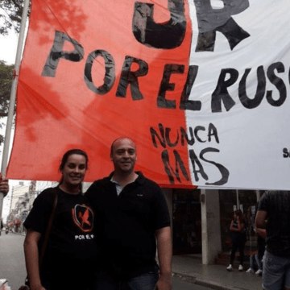

Sobre Mí
Sergio "Checho"
Sergio "Checho"
Basile


Soy Sergio Basile, muchos de ustedes me conocen como Checho, desde los 18 años afiliado a la UCR, militante y convencido de participar de la vida política desde las ideas del Radicalismo.
En el periodo 2015-2019 fui Concejal de la ciudad de Santa Fe por el Frente Progresista Cívico y Social. Hoy soy Diputado Provincial, siempre priorizando el compromiso de estar cerca de los vecinos y vecinas para construir una Santa Fe entre todos
- Empecé gracias a mi hermano que militaba en la juventud radical a sus inicios y siempre en el partido. Siempre fue una manera de relacionarnos entre nosotros. Él me lleva más de 16 años y siempre fue una figura de referencia. Él militaba en un espacio que tenía representantes importantes en la ciudad de Santa Fe y me motivaba a que participe en política.
Arranqué mas o menos cuando tenía 12 años, lo ayudaba a repartir volantes, a escribir cartas a afiliados de la seccional sexta, pintando paredones a la noche y yendo a encuentros. Me fui contagiando de lo que hacían, de los posicionamientos que tenía el radicalismo de esa época, siempre con el espíritu de la rebeldía de la juventud. Lo importante es que fue la motivación para estar ligado a él y a la política, hoy es un orgullo trabajar junto a él.
Arranqué mas o menos cuando tenía 12 años, lo ayudaba a repartir volantes, a escribir cartas a afiliados de la seccional sexta, pintando paredones a la noche y yendo a encuentros. Me fui contagiando de lo que hacían, de los posicionamientos que tenía el radicalismo de esa época, siempre con el espíritu de la rebeldía de la juventud. Lo importante es que fue la motivación para estar ligado a él y a la política, hoy es un orgullo trabajar junto a él.
- Si bien después de la crisis del 2001 hicimos varias actividades con diferentes grupos de la juventud radical, en el 2003 fue el punto de inflexión, con la inundación de la ciudad. Ahí sentí que tenía que participar activamente para cambiar la triste realidad de la gente y para demostrar que las cosas se podían hacer mejor. La juventud me abrió las puertas y a partir de ahí comencé la militancia desde la base, conociendo la ciudad, recorriendo calle por calle y casa por casa. La campaña más significativa fue la del 2005 cuando le ganamos al peronismo en las legislativas de la ciudad con Jorge Henn como candidato a concejal. Ahí pintamos paredes, recorrimos los barrios entregando cara a cara la propuesta, era hermoso estar con un grupo de militantes que se bancó las noches, el frío, siempre convencidos de ser una alternativa para la ciudad. Para mi la juventud es eso y mucho más; es un bastión de la política, son el futuro, los que deben liderar las luchas de los derechos a conquistar para tener una sociedad mejor, deben tener un rol activo y hay que saberlos escuchar, siempre tienen algo por decir y aportar.
Sin dudas fue una experiencia enriquecedora que me permitió crecer de manera exponencial. Cuando sos elegido por el voto popular, pasas a tener una responsabilidad muy grande y es la de ocupar un espacio de decisión que permite plasmar en la realidad las ideas y convicciones de la militancia.
En el Concejo se hace tangible el arte de transformar que uno abraza desde la política. Es donde se propone y establecen criterios para las decisiones del ejecutivo. Allí las ideas que uno tiene se vuelven obras, como por ejemplo, la reestructuración de calle Mendoza, el cantero central frente al Cullen o refacciones de plazas como en Altos del Valle o Nueva Santa Fe.
El ámbito legislativo local, es la cercanía directa, sin intermediarios. Así lo hicimos llevando la oficina móvil a casi todos los barrios de la ciudad como nexo para que los vecinos nos presenten planteos y demandas que debían ser abordadas desde el concejo. Toda esa información recavada quedó plasmadas en un mapa interactivo al que todos pueden acceder.
En el Concejo se hace tangible el arte de transformar que uno abraza desde la política. Es donde se propone y establecen criterios para las decisiones del ejecutivo. Allí las ideas que uno tiene se vuelven obras, como por ejemplo, la reestructuración de calle Mendoza, el cantero central frente al Cullen o refacciones de plazas como en Altos del Valle o Nueva Santa Fe.
El ámbito legislativo local, es la cercanía directa, sin intermediarios. Así lo hicimos llevando la oficina móvil a casi todos los barrios de la ciudad como nexo para que los vecinos nos presenten planteos y demandas que debían ser abordadas desde el concejo. Toda esa información recavada quedó plasmadas en un mapa interactivo al que todos pueden acceder.
Sin dudas el paso previo por el ámbito local ha sido de gran experiencia para llevar adelante este rol, porque si bien existe la posibilidad de extender el conocimiento y hacer posicionamientos políticos más estructurales, da la oportunidad de seguir mejorando con más decisión y más amplitud. Discutir la proyección, orientación y desarrollo de la Provincia con los principales dirigentes de esta provincia es apasionante.
Además seguimos con la impronta de trabajar en el territorio, apostando a la empatía y cercanía como pilares de una política que construye, que motiva y que transforma.
Estando al lado de cada ciudadano o ciudadana, institución y representaciones que ven en nosotros o en el trabajo colectivo esa instancia de cambiar lo que realmente nos molesta o nos revela.
Además seguimos con la impronta de trabajar en el territorio, apostando a la empatía y cercanía como pilares de una política que construye, que motiva y que transforma.
Estando al lado de cada ciudadano o ciudadana, institución y representaciones que ven en nosotros o en el trabajo colectivo esa instancia de cambiar lo que realmente nos molesta o nos revela.